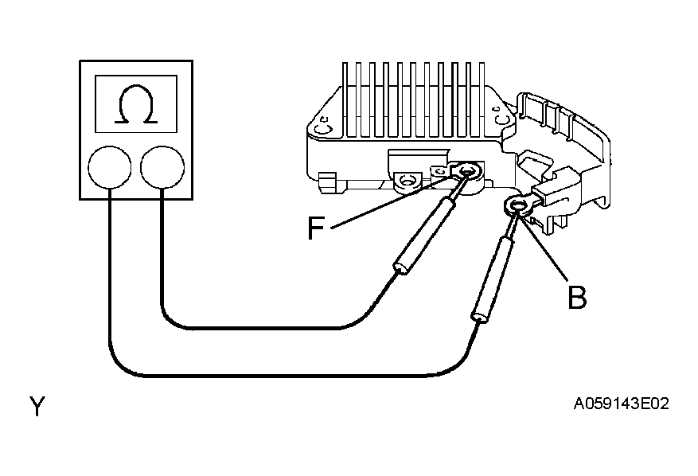
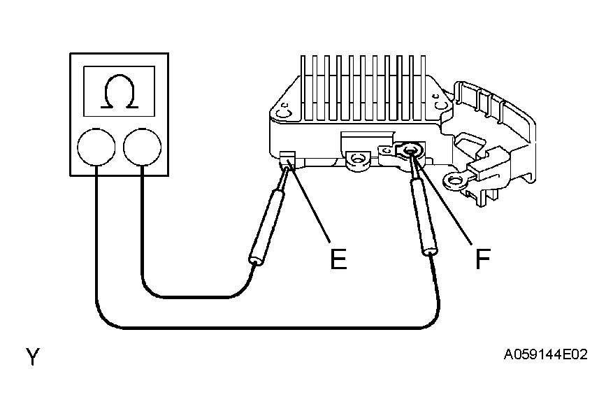
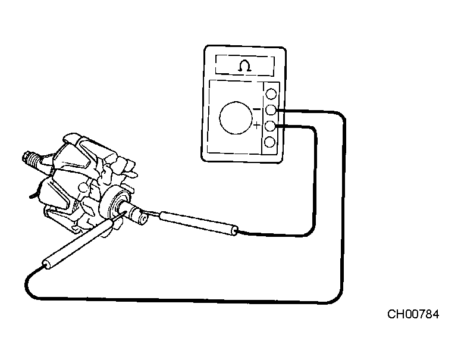
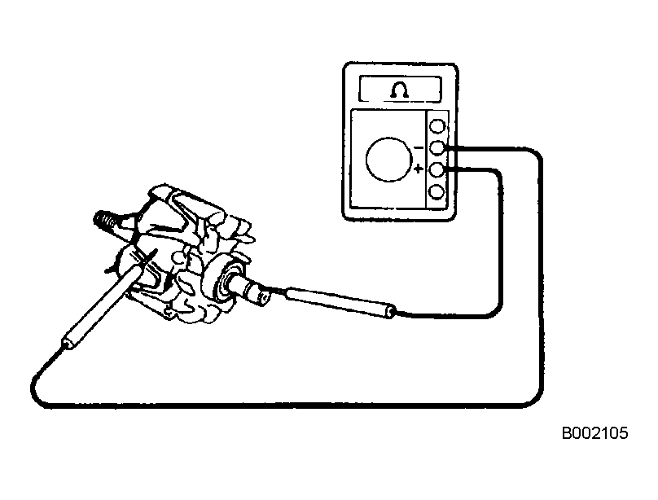
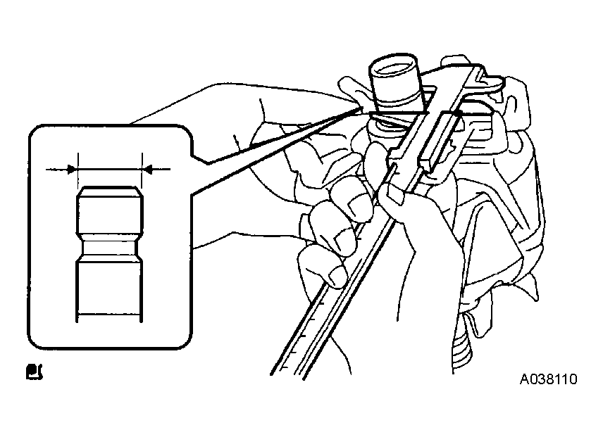
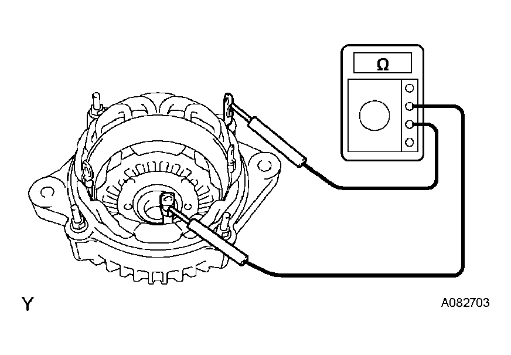
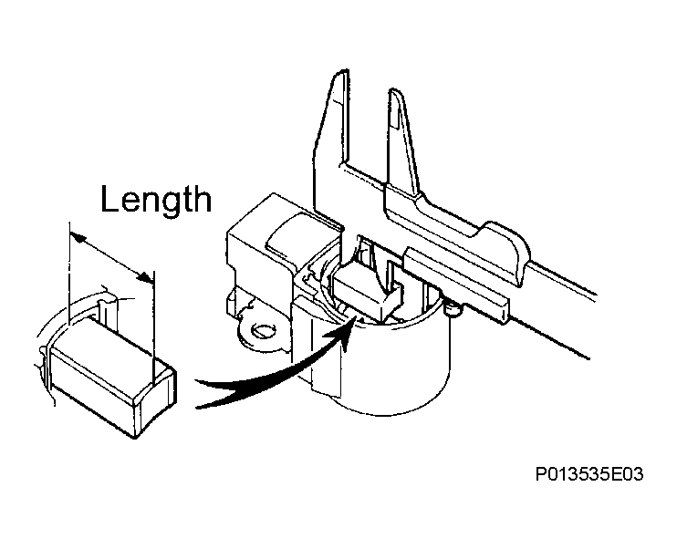

Charging (1NZ-FE): Generator: Inspection
- INSPECT GENERATOR REGULATOR ASSEMBLY
- Measure the resistance between the regulator terminals (F) and (B).

Courtesy of © TOYOTA, LICENSE AGREEMENT TMS1002Standard resistance: Below 1 Ω or more than 10 kΩ
HINT:
When the ohmmeter's leads are initially touched to the regulator, one of the above values will be output.
When the leads are reversed, the reading will change to the other value.
If the result is not as specified, replace the generator regulator.
- Measure the resistance between the regulator terminals (F) and (E).

Courtesy of © TOYOTA, LICENSE AGREEMENT TMS1002Standard resistance: Below 1 Ω or more than 10 kΩ
HINT:
When the ohmmeter's leads are initially touched to the regulator, one of the above values will be output.
When the leads are reversed, the reading will change to the other value.
If the result is not as specified, replace the generator regulator.
- Measure the resistance between the regulator terminals (F) and (B).
- INSPECT GENERATOR ROTOR ASSEMBLY
- Check the rotor for an open circuit.
- Measure the resistance between the slip rings.

Courtesy of © TOYOTA, LICENSE AGREEMENT TMS1002Standard resistance: 2.1 to 2.5 Ωat 20°C (68°F)
If the result is not as specified, replace the rotor assembly.
- Measure the resistance between the slip rings.
- Check if the rotor is grounded.
- Measure the resistance between the slip ring and rotor.

Courtesy of © TOYOTA, LICENSE AGREEMENT TMS1002Standard resistance: 10 kΩ or higher
If the result is not as specified, replace the rotor assembly.
- Measure the resistance between the slip ring and rotor.
- Check that the slip rings are not rough or scored. If rough or scored, replace the rotor assembly.
- Using a vernier caliper, measure the slip ring diameter.

Courtesy of © TOYOTA, LICENSE AGREEMENT TMS1002Standard diameter: 14.2 to 14.4 mm (0.559 to 0.567 in.)
Minimum diameter: 12.8 mm (0.504 in.)
If the diameter is less than the minimum, replace the rotor assembly.
- Check the rotor for an open circuit.
- INSPECT GENERATOR HOLDER WITH RECTIFIER
- Inspect the positive (+) rectifier.
- Using an ohmmeter, connect one tester probe to the positive (+) terminal and the other to each rectifier terminal.
- Reverse the polarity of the tester probes and repeat the step above.
- Check that one shows a resistance of below 1 Ω and the other shows a resistance of 10 kΩ or higher.
If the result is not as specified, replace the rectifier holder.
- Inspect the negative (-) rectifier.
- Using an ohmmeter, connect one tester probe to each negative (-) terminal and the other to each rectifier terminal.
- Reverse the polarity of the tester probes and repeat the step above.
- Check that one shows a resistance of below 1 Ω and the other shows a resistance of 10 kΩ or higher.
If the result is not as specified, replace the rectifier holder.
- Inspect the positive (+) rectifier.
- INSPECT DRIVE END FRAME
- Check the stator coil for an open circuit.
- Measure the resistance between the coil leads.

Courtesy of © TOYOTA, LICENSE AGREEMENT TMS1002Standard resistance: Below 1 Ω
If the result is not as specified, replace the drive end frame.
- Measure the resistance between the coil leads.
- Check the stator for ground.
- Measure the resistance between the coil lead and drive end frame.
Standard resistance: 10 kΩ or higher
If the result is not as specified, replace the drive end frame.
- Measure the resistance between the coil lead and drive end frame.
- Check that the bearing is not rough or worn. If necessary, replace the generator assembly.
- Check the stator coil for an open circuit.
- INSPECT GENERATOR BRUSH HOLDER ASSEMBLY
- Using a vernier caliper, measure the exposed brush length.

Courtesy of © TOYOTA, LICENSE AGREEMENT TMS1002Standard exposed length: 9.5 to 11.5 mm (0.374 to 0.453 in.)
Minimum exposed length: 4.5 mm (0.177 in.)
If the exposed length is less than the minimum, replace the brush holder assembly.
- Using a vernier caliper, measure the exposed brush length.